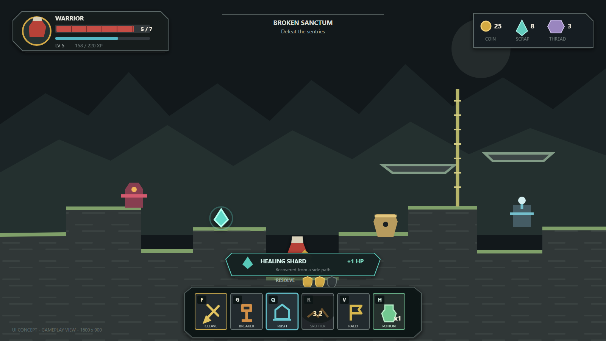

Target game system
한 명의 영웅.
전투 방식은 장비로 바뀐다.
기존 Warrior, Archer, Assassin을 버리는 것이 아니라 각각을 검과 방패, 활, 쌍검 무기 계통으로 전환합니다. 플레이어는 스테이지 전에 두 무기와 전신 장비를 준비하고, 전투 중 무기를 교체하며, 재료로 영구 성장시킵니다.
무엇을 가져갈지
무기 2개, 방어구, 참, 유물, 소모품, 무기별 인챈트를 아머리에서 정합니다.
어떻게 싸울지
같은 영웅이 방어적 반격, 원거리 제압, 빠른 연계 사이를 전환합니다.
무엇에 투자할지
무기 숙련, 확정 강화, 신규 설계도에 재료를 쓰고 런 카드는 임시 변주를 만듭니다.
작게 시작하되, 완성 구조는 처음부터 고정
첫 전환은 이미 구현된 세 전투 키트를 재사용합니다. 구조가 안정된 뒤에만 창, 대형 도끼, 화승총을 추가합니다.
전체 장비 빌드 실험실
장비는 서로 다른 질문에 답해야 합니다. 아래 조합을 바꾸면 공격·통제·생존·기동 성향과 실제 플레이 설명이 갱신됩니다.
방벽 사수
6개 무기 계통, 각자 다른 전투 문법
숫자만 다른 무기는 만들지 않습니다. 각 계통은 기본 공격, 강공격, 세 스킬, 패시브, 숙련 질문이 함께 바뀝니다.
전신 장비는 슬롯마다 한 가지 책임
무기는 행동을, 방어구는 생존 교환을, 참은 조건부 리듬을, 유물은 드문 규칙 변화를, 소모품은 제한된 위기 대응을 담당합니다.
| 슬롯 | 첫 전환에 유지 | 완성 목표 추가 | 금지하는 복잡성 |
|---|---|---|---|
| 방어구 | 여행자 재킷, 누더기 갑옷, 러너 망토 | 가드 맨틀, 연금술사 직조복 | 5부위 세트, 무작위 옵션 |
| 참 | 구리 참, 스프링 참 | 카운터 인장, 수집가 매듭, 원소 고리, 스왑 핀 | 두 번째 스킬 트리 |
| 유물 | 슬라임 유물 | 대장간 심장, 폭풍 렌즈, 순례자 종 | 항상 최선인 공격 배수 |
| 소모품 | 소형 포션, 대시 토닉, 회수 도구 | 정화 플라스크 | 격자 인벤토리와 잡동사니 |
원소 4개, 공통 규칙 4개
무기마다 별도 원소 코드를 만들지 않습니다. 공격 정의는 적용 방식만 선언하고, 상태 규칙은 하나의 공통 시스템이 소유합니다.
확정 성장, 4개 재료, 중복 없는 역할
강화 실패, 내구도, 무작위 희귀도는 없습니다. 재료는 숫자를 불리기보다 무기 계통과 장비 선택지를 넓히는 데 사용합니다.
무기 영구 강화
각 무기 형태는 고정된 0-3랭크를 가집니다.
재료 경제
항목을 선택해 주요 획득처와 사용처를 확인합니다.
Stage 1이 아닌, 선택 가능한 아스널 트라이얼
짧은 독립 프롤로그에서 세 기본 무기를 순서대로 가르칩니다. 스킵해도 전투 능력과 보상은 동일하며 나중에 훈련 메뉴에서 재플레이할 수 있습니다.
진입 방식 비교
완료, 스킵, 재플레이의 결과를 전환해 확인합니다.
현재는 자동 프로필 저장만 존재
장비·재료·마스터리는 파일로 저장되지만, 플레이어가 고르는 슬롯과 중단 런 이어하기는 없습니다. 목표는 프로필 3개와 체크포인트 단위의 안전한 Continue입니다.
현재 구현
user://profile.json자동 저장- 임시 파일 검증과 백업 복구
- 장비·재료·숙련·설정 유지
- 프로필 선택 UI 없음
- 활성 런 복구 계약 없음
목표 구현
- 로컬 프로필 슬롯 3개
- 슬롯별 플레이 시간·진행 요약
- 안전 지점 런 스냅샷 1개
- Main Menu의 Continue
- Save & Return / 명시적 Abandon
중요: Continue 직후 중단 세이브를 지우지 않습니다. 다음 체크포인트까지 로딩 실패나 비정상 종료가 나도 같은 안전 지점에서 다시 복구할 수 있어야 합니다.
캐릭터 선택은 사라지고, 준비 화면이 중심이 된다
동일한 영웅을 고르는 화면은 필요하지 않습니다. 프로필과 아머리가 영구 진행, 다음 스테이지 정보, 장비 선택을 한 번에 연결합니다.
As-is
To-be

Frost resistance · Potion 1
검방
활
다음 교체 가능
구현은 재분류부터, 신규 콘텐츠는 마지막
기존 시스템을 버리고 다시 만들지 않습니다. 세 클래스 키트를 무기 계통으로 옮긴 뒤 전체 장비·세이브·튜토리얼을 붙이고, 검증이 끝난 후 새 무기를 추가합니다.
현재 v1 저장 픽스처를 고정하고 새 영웅·무기·인챈트 타입을 추가
FOUNDATION한 영웅 + 검방/활/쌍검 재분류 + 무기 전환을 실제 스테이지에 연결
PLAYABLE무기 2칸과 방어구·참·유물·소모품을 아머리 프리셋으로 통합
LOADOUT프로필 v2 마이그레이션, 3개 슬롯, 백업·복구 계약 구현
PROFILE불/냉기/독/전격, 확정 강화, 재료/설계도 보상 경제 구현
GROWTH체크포인트 중단 저장, Save & Return, Continue와 복구 구현
CONTINUITY아스널 트라이얼 완료/스킵/재플레이와 프로덕션 UI 교체
EXPERIENCE창·대형 도끼·화승총 및 추가 장비를 재미/밸런스 게이트 뒤에 확장
EXPANSION각 단계는 별도의 플레이 가능한 결과와 자동 검증을 가져야 하며, Phase B가 재미있고 안정적이기 전에는 Phase I 콘텐츠를 작성하지 않습니다.